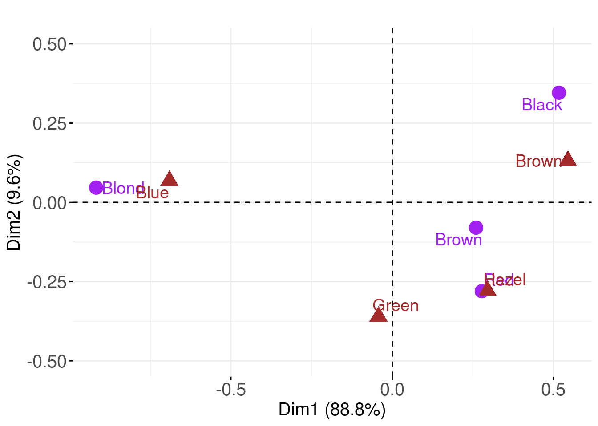
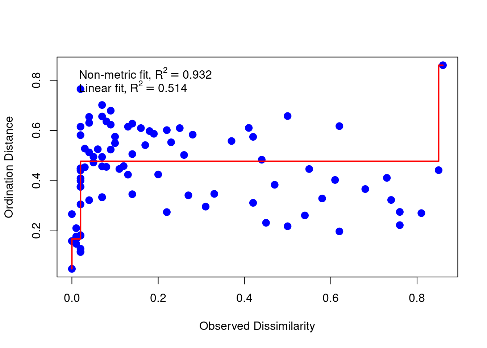

Multidimensional Scaling (MDS)
Multidimensional scaling (MDS) is an extended family of techniques that try to reproduce the relative positions of a set of points in a reduced space given, not the points themselves, but only a matrix with interpoint distances ( dissimilarities ). These distances might be measured with error, or even be non-Euclidean.
Metric Scaling
Metric scaling tries to produce a set of coordinates (a configuration of points) in a reduced number of dimensions whose matrix of interpoint Euclidean distances approximates the original dissimilarity matrix as closely as possible. Principal coordinates (PCO) is one metric scaling technique (it is sometimes called classical or Torgerson scaling ).
Examples in R
Consider data which are not represented as points in a feature space:
- Where we are only provided with (dis)similarity matrices between objects (e.g., chemical compounds, images, trees, or other complex objects)
- Where there are no obvious coordinates in (continuous) n-dimensional space .
Distances (in km) between North Island cities
TASK On a piece of paper roughly draw the shape of the North Island (of Aotearoa | New Zealand). From memory alone mark the location of the following cities Auckland, Gisborne, Hamilton, Hastings, Napier, Rotorua, Tauranga, Whanganui, Wellington, Whakatane, and Whangarei.
glimpse(north_island)
## Rows: 11
## Columns: 11
## $ Auckland <dbl> 0, 505, 126, 441, 421, 235, 205, 457, 658, 298, 165
## $ Gisborne <dbl> 505, 0, 394, 235, 215, 286, 298, 467, 538, 201, 664
## $ Hamilton <dbl> 126, 394, 0, 315, 295, 109, 106, 331, 532, 193, 294
## $ Hastings <dbl> 441, 235, 315, 0, 20, 240, 319, 235, 302, 328, 606
## $ Napier <dbl> 421, 215, 295, 20, 0, 220, 299, 250, 319, 308, 585
## $ Rotorua <dbl> 235, 286, 109, 240, 220, 0, 86, 301, 449, 86, 401
## $ Tauranga <dbl> 205, 298, 106, 319, 299, 86, 0, 439, 546, 97, 370
## $ Whanganui <dbl> 457, 467, 331, 235, 250, 301, 439, 0, 188, 388, 617
## $ Wellington <dbl> 658, 538, 532, 302, 319, 449, 546, 188, 0, 535, 806
## $ Whakatane <dbl> 298, 201, 193, 328, 308, 86, 97, 388, 535, 0, 483
## $ Whangarei <dbl> 165, 664, 294, 606, 585, 401, 370, 617, 806, 483, 0pheatmap(north_island, cluster_rows = TRUE,
treeheight_row = 2, treeheight_col = 2,
fontsize_row = 12, fontsize_col = 12,
cellwidth = 26, cellheight = 26)
mds <- cmdscale(north_island, eig = TRUE)
mds
## $points
## [,1] [,2]
## Auckland 259.23245 67.43013
## Gisborne -107.54173 -285.70950
## Hamilton 129.07943 42.71295
## Hastings -173.12950 -25.15974
## Napier -150.83765 -34.70680
## Rotorua 37.39858 -18.39760
## Tauranga 118.78535 -85.88683
## Whanganui -192.73988 181.50600
## Wellington -385.83172 167.76477
## Whakatane 49.93256 -140.17112
## Whangarei 415.65212 130.61774
##
## $eig
## [1] 5.249373e+05 1.953521e+05 4.217767e+04 1.872276e+04 1.222717e+03
## [6] 2.910383e-11 -1.399691e+02 -4.733140e+02 -1.103819e+04 -1.883151e+04
## [11] -2.462990e+04
##
## $x
## NULL
##
## $ac
## [1] 0
##
## $GOF
## [1] 0.8600209 0.9206005Eckmans colour perception (1954)
Data may from objects for which we have similarities but no underlying (geometric) space. Here the goal is to understand the underlying dimensionality of colour perception.
- Similarities for 14 colours, with wavelengths from 434 to 674nm based on rating by 31 subjects
- Each pair of colours was rated on a 5-point scale:
- 0 = no similarity up to 4 = identical.
- After averaging over 31 raters the similarities were divided by 4 such that they are within the unit interval.
- Each pair of colours was rated on a 5-point scale:
glimpse(ekman)
## Rows: 14
## Columns: 14
## $ w4 <dbl> 0.00, 0.86, 0.42, 0.42, 0.18, 0.06, 0.07, 0.04, 0.02, 0.07, …
## $ `34.w4` <dbl> 0.86, 0.00, 0.50, 0.44, 0.22, 0.09, 0.07, 0.07, 0.02, 0.04, …
## $ `45.w4` <dbl> 0.42, 0.50, 0.00, 0.81, 0.47, 0.17, 0.10, 0.08, 0.02, 0.01, …
## $ `65.w4` <dbl> 0.42, 0.44, 0.81, 0.00, 0.54, 0.25, 0.10, 0.09, 0.02, 0.01, …
## $ `72.w4` <dbl> 0.18, 0.22, 0.47, 0.54, 0.00, 0.61, 0.31, 0.26, 0.07, 0.02, …
## $ `90.w5` <dbl> 0.06, 0.09, 0.17, 0.25, 0.61, 0.00, 0.62, 0.45, 0.14, 0.08, …
## $ `04.w5` <dbl> 0.07, 0.07, 0.10, 0.10, 0.31, 0.62, 0.00, 0.73, 0.22, 0.14, …
## $ `37.w5` <dbl> 0.04, 0.07, 0.08, 0.09, 0.26, 0.45, 0.73, 0.00, 0.33, 0.19, …
## $ `55.w5` <dbl> 0.02, 0.02, 0.02, 0.02, 0.07, 0.14, 0.22, 0.33, 0.00, 0.58, …
## $ `84.w600` <dbl> 0.07, 0.04, 0.01, 0.01, 0.02, 0.08, 0.14, 0.19, 0.58, 0.00, …
## $ w610 <dbl> 0.09, 0.07, 0.02, 0.00, 0.02, 0.02, 0.05, 0.04, 0.37, 0.74, …
## $ w628 <dbl> 0.12, 0.11, 0.01, 0.01, 0.01, 0.02, 0.02, 0.03, 0.27, 0.50, …
## $ w651.w <dbl> 0.13, 0.13, 0.05, 0.02, 0.02, 0.02, 0.02, 0.02, 0.20, 0.41, …
## $ `674` <dbl> 0.16, 0.14, 0.03, 0.04, 0.00, 0.01, 0.00, 0.02, 0.23, 0.28, …Distances (in km) between 21 cities in Europe
TASK On a piece of paper roughly draw the shape of Europe. From memory alone mark the location of the following cities Athens, Barcelona, Brussels, Calais, Cherbourg, Cologne, Copenhagen, Geneva, Gibraltar, Hamburg, Hook of Holland, Lisbon, Lyons, Madrid, Marseilles, Milan, Munich, Paris, Rome, Stockholm, and Vienna.
## Plotting Multidimensional Scaling (for interest)
## stats::cmdscale performs Classical MDS
autoplot(eurodist)
## Plotting Classical (Metric) Multidimensional Scaling
autoplot(cmdscale(eurodist, eig = TRUE))
autoplot(cmdscale(eurodist, eig = TRUE), label = TRUE, shape = FALSE,
label.size = 3)
## Plotting Non-metric Multidimensional Scaling
## MASS::isoMDS and MASS::sammon perform Non-metric MDS
autoplot(sammon(eurodist))
autoplot(sammon(eurodist), shape = FALSE, label = TRUE,label.size = 3)
## Have a go at interpreting these plots based on the geography of the cities :-)Correspondence Analysis (CA)
CA is a special case of metric MDS where the distance measure is the chi-square distance. It is conceptually similar to principal component analysis but where the data are categorical, counts, rather than continuous. CA is traditionally applied to contingency tables where rows and columns are treated equivalently; it decomposes the chi-square statistic associated with this table into orthogonal factors. Correspondence analysis is usually the best way to follow up on a significant chi-square test.
glimpse(HairEyeColor)
## 'table' num [1:4, 1:4, 1:2] 32 53 10 3 11 50 10 30 10 25 ...
## - attr(*, "dimnames")=List of 3
## ..$ Hair: chr [1:4] "Black" "Brown" "Red" "Blond"
## ..$ Eye : chr [1:4] "Brown" "Blue" "Hazel" "Green"
## ..$ Sex : chr [1:2] "Male" "Female"
HC.df <- as.data.frame.matrix(HairEyeColor[ , , 2])
HC.df
## Brown Blue Hazel Green
## Black 36 9 5 2
## Brown 66 34 29 14
## Red 16 7 7 7
## Blond 4 64 5 8
chisq.test(HC.df)
##
## Pearson's Chi-squared test
##
## data: HC.df
## X-squared = 106.66, df = 9, p-value < 2.2e-16
The first axis shows a contrast between black haired and blonde haired students, mirrored by the brown eye, blue eye contrast. In CA the two categories, rows and columns play symmetric roles and we interpret the proximity of Blue eyes and Blond hair as showing strong co-occurence of these categories.
Biplot barycentric scaling
- Row points at the centre of gravity of the column levels with their respective weights
- Blue eyes at centre of gravity of the (Black, Brown, Red, Blond) with weights proportional to (9,34,7,64), the hair counts for blue eyes.
- The Blond row point is very heavily weighted so Blond hair and Blue eyes close together
Non-metric Multidimensional Scaling
Multidimensional scaling aims to minimize the difference between the squared distances \(D^2\) from the distance matrix \(D\), and the squared distances between the points with their new coordinates. Unfortunately, this objective tends to be sensitive to outliers: one single data point with large distances to everyone else can dominate, and thus skew, the whole analysis.
Under certain circumstances trying to preserve the actual dissimilarities might be too restrictive or even pointless. For example if there is large error in the dissimilarity estimates, if the dissimilarities or the data they were based on were ranks (ordinal), then the magnitude of the distances are too crude to be worth preserving. A method that preserved only the rank order of the dissimilarities would be more appropriate. The algorithm to do this is virtually the same as the one given above for metric scaling. The sole difference is that the linear regression that fitted the estimated distances for the solution to the dissimilarities is now replaced with an order preserving regression.
Robust ordination, or non-metric multidimensional scaling (NMDS), attempts to embed the points in a new space such that the order of the reconstructed distances in the new map is the same as the ordering of the original distance matrix. NMDS looks for a transformation f() of the given dissimilarities, distances d. The quality of the approximation can be measured by the standardized residual sum of
squares (STRESS) function: \(\text{Stress}^2 = \frac{\Sigma(f(d) - \tilde{d})^2}{\Sigma d^2}\) where \(f(d)\approx \tilde{d}\).
NMDS is not sequential:
- we have to specify the underlying dimensionality k at the outset (like kmeans)
- optimization is run to maximize the reconstruction of the distances in k dimensions.
- there is no notion of percentage of variation explained by individual axes as provided in PCA.
- as for kmeans Make a screeplot for \(k = 1,2,3,...\) and looking at how well the STRESS drops.
- because each calculation of a NMDS result librarys a new optimization that is both random and dependent on the value of k, we repeat the process M times
Examples in R
Use the function metaMDS from the vegan package; metaMDS performs NMDS, and tries to find a stable solution using several random starts. In addition, it standardizes the scaling in the result, so
that the configurations are easier to interpret.
Illustration with k = 2
stressplot(metaMDS(ekman, k = 2, autotransform = FALSE), pch = 20, cex = 2)
## Run 0 stress 0.2705898
## Run 1 stress 0.2711545
## Run 2 stress 0.2739054
## Run 3 stress 0.2634663
## ... New best solution
## ... Procrustes: rmse 0.2448256 max resid 0.4517853
## Run 4 stress 0.265124
## Run 5 stress 0.261966
## ... New best solution
## ... Procrustes: rmse 0.1819642 max resid 0.5616079
## Run 6 stress 0.2752863
## Run 7 stress 0.2634591
## Run 8 stress 0.2664506
## Run 9 stress 0.2658195
## Run 10 stress 0.2655221
## Run 11 stress 0.2683486
## Run 12 stress 0.2682856
## Run 13 stress 0.272819
## Run 14 stress 0.2611536
## ... New best solution
## ... Procrustes: rmse 0.1314703 max resid 0.2913875
## Run 15 stress 0.278313
## Run 16 stress 0.3000136
## Run 17 stress 0.2702804
## Run 18 stress 0.2770341
## Run 19 stress 0.2713099
## Run 20 stress 0.2635924
## *** Best solution was not repeated -- monoMDS stopping criteria:
## 1: no. of iterations >= maxit
## 18: stress ratio > sratmax
## 1: scale factor of the gradient < sfgrmin